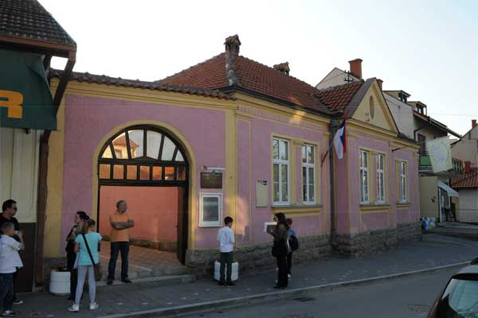

Školska 2012/2013. godina bila je veoma uspešna i plodonosna u afirmaciji škole, samim tim grada i opštine Ub na polju kulture i muzičke umetnosti.
Školi i gradu Ubu doneli smo preko 150 nagrada sa raznih smotri, festivala, susreta i takmičenja širom zemlje (Beograd, Jagodina, Sremski Karlovci, Aranđelovac, Veliko Gradište, Subotica...) Pored priznanja naših učenika i nastavnika u Srbiji, naša mlada violinistkinja Aleksandra Latinović iz klase prof. Marije Nikitović ostvarila je izuzetan uspeh i rezultat na takmičenju „Jaroslav Kocijan” u Češkoj, što znači da smo doprineli i stvaranju pozitivnog imidža Srbije u Evropi.
Organizovali smo nekoliko izvanrednih muzičkih programa i manifestacija (Svetosavska akademija, Druga Smotra stvaralaštva srpskih kompozitora, 11. Festival naše škole, koncert za Dan škole). Uslovi za rad škole bili su na nivou prethodnih godina. Preko letnjeg raspusta obavljene su tekuće popravke i krečenje prostorija, dok je školski instrumentarijum dopunjen sa tri gitare (jedna je poklonjena đaku generacije), jednim električnim klavirom i više komada sitnog inventara.
Festivalska atmosfera ispred škole
Redovna nastava odvijala se po školskom kalendaru i Planu i programu
škole za 2012/2013. godinu. Stručna zastupljenost bila je u skladu sa
Pravilnikom o vrsti stručne spreme za osnovne muzičke škole.
Na početku školske godine bilo je devet stalno zaposlenih profesora,
šest na određeno vreme. Zbog većeg broja časova, angažovana su i dva
profesora po ugovoru, sa po 30% radnog vremena.
Tokom godine došlo je do promene u odseku violine: Tanja Maksimović
otišla je na porodiljsko odsustvo, a zamenila je Anja Popović.
U školskoj 2012/2013. nastavu je realizovalo 17 profesora.
Proslava dana škole, 21. maj 2013.
U okviru školskih aktivnosti, delovali su školski hor i orkestar, pod rukovodstvom Marije Novović i Dejana Matića.
Od 143 učenika, koliko je bilo upisano na početku školske 2012/2013. godine, školovanje je završilo 13, od kojih su njih troje (Marijana Vasiljević, Miona Živanović i Vojislav Živić) nastavili muzičko obrazovanje u srednjim muzičkim školama. Ispisanih učenika je 14, a nekoliko đaka prvog razreda upisalo se ponovo u školu, promenivši instrument ili klasu.
Sofija Živić, učenica prvog razreda klarineta, po odluci
Nastavničkog veća, a na predlog nastavnika, ubrzano je napredovala, te je u
januarskom ispitnom roku prešla u drugi razred.
Od učenika pripremnog razreda, jedan broj je polagao ispit i prešao u
drugi razred.
Na popravni ispit u avgustovskom roku izašla su dva učenika gitare
(Nemanja Ristić i Veljko Pucarević) i položili razred.
Na razredni ispit nije bilo upućenih učenika.
Nema učenika sa smanjenom ocenom iz vladanja.
Izostanci u toku školske godine: opravdanih 345 i neopravdanih 22.
| odličan | 72 |
| vrlodobar | 34 |
| dobar | 14 |
| dovoljan | 14 |
| nedovoljan | 1 |
| neocenjeni | 1 |
| ispisani | 14 |
| Ukupno sa prvim raz. | 143 |
| RAZRED | II | III | IV | V | VI |
| odličan | 12 | 9 | 2 | 7 | 5 |
| vrlodobar/td> | 2 | 6 | 6 | 9 | 5 |
| dobar | 2 | 1 | 4 | 4 | 3 |
| nedovoljan | / | / | 1 | 2 | / |
| neocenjeni | / | / | / | / | / |
| ispisani | 2 | 1 | / | 1 | / |
| Ukupno | 18 | 17 | 13 | 24 | 13 |
| RAZRED | I |
| veoma uspešan | 37 |
| uspešan | 6 |
| manje uspešan | / |
| zadovoljava | / |
| ne zadovoljava | 1 |
| neocenjeni | 2 |
| ispisani | 5 |
| UKUPNO | 51 |
| odličan | 35 | veoma uspešan | 37 |
| vrlodobar | 28 | uspešan | 6 |
| dobar | 14 | manje uspešan | / |
| dovoljan | 1 | zadovoljava | / |
| nedovoljan | 3 | ne zadovoljava | 1 |
| neocenjeni | 2 | neocenjeni | 2 |
| ispisani | 9 | ispisani | 5 |
| Ukupno | 92 | Ukupno | 51 |
| Ukupno sa prvim raz. | 143 |
Godišnji koncert učenika povodom gradske slave - Spasovdana
Ove školske godine učenici ŠOMO „Petar Stojanović” učestvovali su na 22 takmičenja, smotre i festivala u zemlji i inostranstvu i ukupno osvojili 157 priznanja i nagrada, od čega sedam na Republičkom takmičenju u Beogradu i 57. Republičkom Festivalu učenika muzičkih škola Srbije u Pančevu.
Sremski Karlovci, 01.11 - 04.11.2012.
Helena Vučičević, drugi razred – I nagrada
Klasa: Milena Šoškić
Aleksandra Latinović, četvrti razred – II nagrada
Klasa: Marija Nikitović
Pančevo, 01.12 - 04.12.2012.
Vanja Marjanović, prvi razred - II nagrada
Sara Jovanović, prvi razred - II nagrada
Miona Živanović, drugi razred - II nagrada
Klasa: Teuta Aslani
Višnja Begović, drugi razred - II nagrada
Miona Slavković, prvi razred - II nagrada
Marjana Leštarić, prvi razred – III nagrada
Isidora Cvijović, prvi razred - III nagrada
Klasa: Nataša Tasić Knežević
Jagodina, 10.12.2012.
Marijana Mirković, treći razred – I nagrada
Klasa: Tijana Božović
Nena Nenadović, drugi razred – II nagrada
Klasa: Milena Šoškić
Beograd, 11.12.2012.
Helena Vučičević, drugi razred – I nagrada
Nena Nenadović, drugi razred – II nagrada
Marijana Vasiljević, šesti razred – II nagrada
Klasa: Milena Šoškić
Laureati 11. internacionalnog festivala - Ub
Subotica, 23.02.2013.
Sofija Živić, drugi razred - I nagrada
Klasa: Vladimir Ivanović
Beograd, 28.02.2013.
Helena Vučičević – I nagrada
Nena Nenadović - II nagrada
Klasa: Milena Šoškić
Marijana Mirković, treći razred - II nagrada
Klasa: Tijana Božović
Beograd, 28.02.2013.
Nena Nenadović, drugi razred - I nagrada
Klasa: Milena Šoškić
Šabac, 01.03 - 05.03.2013.
Helena Vučičević - II nagrada
Nena Nenadović - II nagrada
Klasa: Milena Šoškić
Aranđelovac, 16.03 - 23.03.2013.
Ognjen Ranković, prvi razred - I nagrada
Mina Knežević, peti razred – I nagrada
Aleksa Kovačević, drugi razred - II nagrada
Klasa: Milka Marković
Vanja Marjanović, prvi razred – II nagrada
Klasa: Teuta Aslani
Helena Vučičević - I nagrada
Nena Nenadović – I nagrada
Tamara Stefanović - I nagrada
Marijana Vasiljević - II nagrada
Klasa: Milena Šoškić
Beograd, 03.04 - 19.04.2013.
Helena Vučičević - I nagrada
Klasa: Milena Šoškić
Miona Živanović - III nagrada
Klasa: Teuta Aslani
Ub, 19.04 - 25.04.2013.
LAUREATI:
Aleksandra Latinović, četvrti razred – laureat za violinu
Klasa: Marija Nikitović
Iva Adamović, bebi kategorija – laureat za klarinet
Klasa: Vladimir Ivanović
Nikola Nestorović – laureat solo-pevač OMŠ
Klasa: Teuta Aslani
Prve nagrade: Srđan Petrović, klasa: Dejan Matić; Sara Jovanović, klasa:
Teuta Aslani; Ognjen Ranković, Mina Knežević, klasa: Milka Marković; Iva
Mitrović, Anđelka Prodanović, Helena Vučičević, Nena Nenadović, Jovana
Đokić, Iva Milinković, Tamara Stefanović, Marijana Vasiljević, klasa:
Milena Šoškić; Danijel Runjajić, Marijana Mirković, klasa: Tijana
Božović; Sofija Živić, klasa: Vladimir Ivanović; Anđela Perišić, Janja
Kovačević, Sanja Pavlović, Sofija Isailović, klasa: Marija Nikitović;
Jovana Adamović, Andrea Đurić, Tijana Lukić, klasa: Katarina Lugo Ordaz;
Vojislav Živić, klasa: Anja Popović.
Druge nagrade: Petar Adamović, Nikola Mijailović, Stefan Petrović, klasa:
Miodrag Krstić; Miona Slavković, Stevan Brsko, klasa: Nataša Tasić
Knežević; Vanja Marjanović, Aleksandra Filipović, Miona Živanović,
klasa: Teuta Aslani; Aleksa Kovačević, klasa: Milka Marković; Simona
Panović, Nađa Milićević, Teodora Milojević, Ana Jadžić, Tijana Božić
klasa: Tijana Božović; Gorana Perišić, Jovana Marković, klasa: Dubravka
Radović; Tijana Gardinovački, Nikola Jovanović, Irena Kovačević, klasa:
Marija Nikitović; Jovan Simeunović, Anđela Popović, Jovana Gajić, Milica
Stevanović, klasa: Katarina Lugo Ordaz; Vukašin Pavlović, klasa: Anja
Popović; Kamerni duo: Miona Živanović i Nikola Nestorović, klasa: Teuta
Aslani.
Treće nagrade: Marijana Leštarić, Isidora Cvijović, klasa: Nataša Tasić
Knežević; Milica Živanović, klasa: Teuta Aslani; Sandra Rakić, Dimitrije
Petković, klasa: Katarina Lugo Ordaz; Katarina Radojičić, Ljubomir
Radojičić, klasa: Marija Nikitović.
Kamerni gudački kvartet iz Makedonije na 11. festivalu
Niš, 10.04 - 17.4.2013.
Aleksandra Latinović - I nagrada
Klasa: Marija Nikitović
Šabac, 24.04.2013.
Ana Adamović, pripremni razred - I nagrada
Andrea Đurić, prvi razred - II nagrada
Jovana Gajić, prvi razred - II nagrada
Klasa: Katarina Lugo Ordaz
Pančevo, 07.05.2013.
Vojislav Živić, šesti razred - I nagrada
klasa: Marija Nikitović
Tamara Stefanović, treći razred - II nagrada
Klasa: Milena Šoškić
Miona Živanović, drugi razred – II nagrada
Klasa: Teuta Aslani
Sofija Živić – II nagrada
Kamerni duo: Sofija Živić i Tamara Stefanović - I nagrada
Klasa Anja Popović – Milena Šoškić
Košice, Republika Češka, 08.05.2013.
Aleksandra Latinović - III mesto i specijalna nagrada
Klasa: Marija Nikitović
Mladenovac, 14.05 - 16.05.2013.
Danijel Runjajić, prvi razred - I nagrada
Marijana Mirković, treći razred - II nagrada
Klasa: Tijana Božović
Smederevska Palanka, 21.05 - 25.05.2013.
Marijana Mirković, III nagrada
Klasa: Tijana Božović
Druga Smotra stvaralaštva srpskih kompozitora
Beograd, 25.05 - 29.05.2013.
Helena Vučičević - I nagrada
Tamara Stefanović - I nagrada
Nena Nenadović - II nagrada
Klasa: Milena Šoškić
Ognjen Ranković - I nagrada
Aleksa Kovačević - III nagrada
Klasa: Milka Marković
Veliko Gradište, 15.06.2013
Nikola Nestorović, drugi razred
Sara Jovanović, prvi razred
Klasa: Teuta Aslani
Mina Knežević, peti razred
Ognjen Ranković, prvi razred
Klasa: Milka Marković
Milica Stevanović, treći razred
Klasa: Katarina Lugo Ordaz
Aleksandra Latinović, četvrti razred
Klasa: Marija Nikitović
Tamara Stefanović, treći razred
Jovana Đokić, drugi razred
Nena Nenadović, drugi razred
Klasa: Milena Šoškić
Može se konstatovati da su po kvalitetu i po kvantitetu nagrada škola u celini, a i naši učenici pojedinačno, ostavili utisak dobre i kvalitetne obrazovne institucije.
Posebno treba izdvojiti međunarodni uspeh naše talentovane i mlade violinistkinje Aleksandre Latinović, iz klase Marije Nikitović, koja je u konkurenciji 40 takmičara iz 12 zemalja Evrope i sveta osvojila treće mesto u svojoj kategoriji i specijalnu nagradu za najbolje izvođenje zadate kompozicije Jaroslava Kocijana na istoimenom internacionalnom takmičenju u Češkoj. Takmičenje se odvijalo u dve etape, što svedoči o njegovoj težini, kompleksnosti i nivou (tu su se svojevremeno takmičili naši najpoznatiji violinisti, Stefan Milenković, Nemanja Radulović i dr.). Aleksandra je do ove školske godine osvojila preko 20 nagrada i priznanja, te je bilo logično da se oproba i na nekim priznatim inostranim takmičenjima. Ovaj značajan poduhvat za nju, ali i za školu, ostvaren je uz veliku pomoć Opštine Ub.
03.09.2012. Počela školska godina.
20.09.2012. Petar Božović održao humanitarno veče u ubskom Domu kulture,
gde su čuvenom glumcu gosti bili učenici naše škole. Nastupao je hor
Muzičke škole sa himnom „Bože pravde”, a Helena Vučičević, klavir i
Aleksandra Latinović, violina, izvele rusku narodnu pesmu „Rjabinuška”.
22.09.2012. Učenica Aleksandra Latinović gostovala u kultnoj emisiji „Mira
Adanja Polak i Vi” na RTS-u. Tom prilikom Aleksandri je uručena majstorska
violina, poklon od Slavice Janošević, graditeljke violina iz Slovenije.
04.10.2012. Gradska biblioteka „Božidar Knežević” u sali Muzičke škole
organizovala susret sa zavičajnim piscem Zoranom Joksimovićem, rodom iz
tamnavskog sela Brezovica. Naši učenici su taj književni događaj obogatili
sledećim muzičkim programom:
18.10.2012. Koncertom za učenike osnovne škole „Rajko Mihailović” u
Banjanima, nastavili smo dugogodišnju praksu da u sredinama do kojih retko
dopire klasična muzika, širimo i promovišemo njen zvuk. Pred prepunom
salom, učenici Muzičke škole su svojim znanjem oduševili drugare iz
Banjana i njihove nastavnike. Nastupao je hor škole pod upravom Marije
Božanić, a svirali su i:
Izložba radova u terakoti
01.11-04.11.2012. Učenici MŠ „Petar Stojanović” učestvovali na Devetoj
smotri muzičkih talenata Srbije u Sremskim Karlovcima.
22.11-28.2012. Održana Druga Smotra stvaralaštva srpskih kompozitora, u
organizaciji naše škole.
26.11.2012. Najuspešniji solisti i kamerni sastavi druge Smotre
stvaralaštva srpskih kompozitora, izabrani na osnovu glasova publike,
predstavili su se u sali Kulturnog centra Beograda ART GET.
28.11.2012. U Svečanoj sali beogradske škole „Stanković” održan i drugi
koncert najboljih učesnika Druge Smotre stvaralaštva srpskih kompozitora.
01.12-04.12.2012. Ubski đaci na Trećem takmičenju solo pevača „Mita
Topalović” u Pančevu.
08.12.2012. Organizovali smo seminar na temu: Školsko zakonodovstvo – osnova
razvoja obrazovanja i vaspitanja, a predavači su bili: Smilja Krneta i Slavica
Đorđević, diplomirane pravnice. Obuci su prisustvovali naši i
nastavnici ubske OŠ „Milan Munjas”.
10.12.2012. Naši učenici učestvovali na Prvom Memorijalu „Miloš
Petrović” u Jagodini.
11.12.2012. Bili smo i na 5. takmičenju mladih pijanista „Slavenski” u
Beogradu.
09.12-15.12.2012. Na muzičkoj radionici „Violin master art” koju je u Beogradu
održala Tatjana Balašova, profesor violoine sa Državnog konzervatorijuma
u Moskvi, aktivno je učestvovala naša učenica Aleksandra Latinović i
prof. Marija Nikitović. Aleksandra je odabrana i da nastupi na završnom
koncertu radionice.
16.12.2012. U Mionici seminar „Ocenjivanje učenika”, u organizaciji
Školske uprave Valjevo. Predavači su bili Nataša Stojanović i Ljiljana
Simić Rajšić, školski psiholog. Tim iz naše škole činili su profesori
Teuta Aslani, Tijana Božović, sekretar škole Vladimir Milosavljević i
direktor Vladimir Đenader.
18. 12.2012. posetili Narodno pozorište u Beogradu i gledali Rosinijevu
operu „Figareva ženidba”
26.12.2012. Humanitarni koncert u organizaciji Kancelarije za pomoć
socijalno ugroženom stanovništvu opštine Ub. Ispred škole nastupali su
Milan Đurić (harmonika) i Aleksa Kovačević (gitara).
27.12.2012. Upriličen Novogodišnji koncert u sali Muzičke škole i
maskenbal za učenike.
P r o g r a m
* Đenader – Himna škole
Hor pripremnog razreda
Dirigent: Marija Božanić
* Magidenko - Petlić
Jovana Mitrović, violina
Klasa: Katarina Lugo Ordaz
* Marković – Ide mali meca
Aleksandra Josipović, violina
Klasa: Katarina Lugo Ordaz
* Sabo – Napoleonov plač
Andrija Ranisavljević, gitara
Klasa: Milka Marković
* Marković - U šumici zeka
Andrea Đurić, violina
Klasa: Katarina Lugo Ordaz
* Vilić - Maca i mleko
Iva Ilić, violina
Klasa: Marija Nikitović
* Tomson – Veliki brodovi
Aleksandra Marinković, klavir
Klasa: Milena Šoškić
* Marković – Gusan
Tijana Gardinovački, violina
Klasa: Marija Nikitović
* Magidenko – Petlić
Mina Sajić, violina
Klasa: Marija Nikitović
* Zimska pesma – Pada sneg
Simona Panović, klavir
Klasa: Tijana Božović
* Marković – Ide mali meca
Nikola Jovanović, violina
Klasa: Marija Nikitović
* Marković – Mali zeka
Sanja Pavlović, violina
Klasa: Marija Nikitović
* Pjermont – Zvončići
Aron – Stari vodenički točak
Anđelka Prodanović, klavir
Klasa: Milena Šoškić
* Marković – Ide mali meca
* Narodna pesma – Pod onom
Anđela Perišić, violina
Klasa: Marija Nikitović
* Petrović – Holandska igra
Simona Živanović, violina
Anđelka Prodanović, klavir
Klasa: Milena Šoškić
* Marković – Etida na narodnu temu
Janja Kovačević, violina
Klasa: Marija Nikitović
* Mocart – Abeceda
Iva Adamović, klarinet
Klasa: Vladimir Ivanović
* Mocart – Čežnja za prolećem
Milica Živanović, solo-pevač
Klasa: Teuta Aslani
* Mocart – Alegreto
Sandra Rakić, violina
Klasa: Katarina Lugo Ordaz
* Božićne melodije – Tiha noć
Sofija Ilić, violina
Klasa: Katarina Lugo Ordaz
* De la Hale – Robin me voli
Aleksandra Filipović, solo-pevač
Klasa: Teuta Aslani
Lomljenje slavskog kolača
26.01.2013. Uoči Savindana, organizovali smo svečanu Svetosavsku akademiju u sali Muzičke škole, koja je ove godine imala humanitarni karakter. 27.01.2013. Uz prisustvo profesora, đaka i prijatelja škole, obeležili smo Svetog Savu, školsku slavu. U prostorijama škole obavljen je čin sečenja slavskog kolača i osvećenja žita, a nakon toga, već kako običaji i red nalažu, organizovan je slavski ručak. 23.02.2013. Na Takmičenju duvača u Subotici osvojili smo jednu prvu nagradu. 23.02.2013. U Kući Đure Jakšića u Beogradu održali smo koncet „U susret 11. internacionalnom festivalu škole”. Vredi zabeležiti program koji su, na visokom nivou, izveli ubski đaci u čuvenoj Skadarliji, pred mnogobrojnom prestoničkom publikom.
Joksimović:Noć uzdiše
Isidora Cvijović
Klasa: Nataša Tasić Knežević
Sor: Etida
Ognjen Ranković
Klasa: Milka Marković
Mocart: Alegreto
Anđela Perišić
Klasa: Milena Šoškić ŠOMO „Petar Stojanović”
Truiar: Romansa
Sofija Živić
Klasa: Anja Popović
Plejel: Sonatina – II stav
Tamara Stefanović
Klasa: Milena Šoškić
Merc: Adađo
Aleksa Kovačević
Klasa: Milka Marković
Lazić: Razigrani akordi
Sofija Živić
Klasa: Vladimir Ivanović
Krajsler: Preludijum i alegro
Aleksandra Latinović
Klasa: Marija Pavlović
Vivaldi: Dođi, dragi moj
Marijana Leštarić
Klasa: Nataša Tasić-Knežević
Brams: Skerco
Sofija Živić
Klasa: Anja Popović
Konjović: Živkova Taša
Miona Živanović
Klasa: Teuta Aslani
Tarega: Komad
Mina Knežević
Klasa: Milka Marković
Bajić: Veruj da te ljubim
Nikola Nestorović
Klasa: Teuta Aslani
Tema iz filma Šindlerova lista
Vojislav Živić
Klasa: Anja Popović
28.02.2013. Učestvovali smo na dva takmičenja beogradskih muzičkih škola:
MŠ „Binički” i MŠ „Vatroslav Lisinski”.
01.03-05.03.2013. Nastup naših đaka na XVII Međunarodnom takmičenju mladih
pijanista u Šapcu.
5.03.2013. U saradnji sa Gradskom bibliotekom „Božidar Knežević”,
priredili smo veče ruske muzike i poezije u našoj školi. Nastupali su
gitaristi Mina Knežević i Aleksa Kovačević, kao i profesor pevanja
Nataša Tasić Knežević.
16.03-23.03.2013. Takmičili smo se na 5. Međunarodnom muzičkom festival u
Aranđelovcu.
03.04-19.04.2013. Uspešno predstavljanje naših učenika na Republičkom
takmičenju u Beogradu.
19.04-25.04.2013. XI Međunarodni Festival naše škole, uz učešće blizu 400
takmičara iz 37 osnovnih i srednjih škola sa teritorije Srbije, kao i tri iz
Makedonije i jedne iz RS. Takmičenje se odvijalo u šest kategorija: harmonika,
duvači, gudači, klavir, gitara i solo pevanje.
10.04-17.4.2013. Bili smo u Nišu, na šestom Međunarodnom takmičenje gudača.
24.04.2013. Učešće ubskih učenika na drugom Međuokružnom festival gudača
u Šapcu.
07.05.2013. Odličan plasman ekipe naše škole na 57. Republičkom festivalu
muzičkih i baletskih škola Srbije u Pančevu.
08.05.2013. Veliki uspeh naše učenice Aleksandre Latinović na
Internacionalnom takmičenju violinista „Jaroslav Kocijan” u Košicama,
Republika Češka (opširnije u odeljku Takmičenja i rezultati).
14.05-16.05.2013. Učestvovali smo na takmičenju „Memorijal Aca Panić” u
Mladenovcu.
20.05.2013. Sednica Nastavničkog veća, izabran đak generacije.
21.05.2013. Dan škole proslavili smo sa roditeljima, gostima i prijateljima.
Najuspešnijima su dodeljene nagrade, a naši učenici priredili su i
odličan koncert.
♪ Narodna pesma: „Sedam sati”
Hor Muzičke škole
Dirigent: Marija Božanić
♪ Betoven: „Oda radosti”
Milan Sajić, pripremni razred
Klasa: Marija Nikitović
♪ Hajdn: „Pesmica”
Anđela Perišić, prvi razred
Klasa: Marija Nikitović
♪ Baklanova: „Mazurka”
Andrea Đurić, prvi razred
Klasa: Katarina Lugo Ordaz
♪ Iljin: „Na ljuljašci”
Milica Stevanović, treći razred
Klasa: Katarina Lugo Ordaz
♪ Pesmice: „Mama, mama”, „Bend svira bis”
Duo: Simona Panović - Danijela Runjajić, prvi razred
Klasa: Tijana Božović
♪ Krajsler: „Preludijum i alegro”
Aleksandra Latinović, četvrti razred
Klasa: Marija Nikitović
♪ Čimaroza: „Sonata”
Ana Jadžić, peti razred
Klasa: Tijana Božović
♪ Lauro: „El Marabino”
„Venecuelanski valcer”
Mina Knežević, prti razred
Klasa: Milka Marković
♪ Đordani: „Dragi moj anđele”
Miona Živanović, drugi razred
Klasa: Teuta Aslani
♪ Masne: „Meditacije”
Sofija Živić, peti razred
Klasa: Anja Popović
♪ Bajić: „Veruj da te ljubim”
Nikola Nestorović, drugi razred
Klasa: Teuta Aslani
♪ Kabalevski: Koncert, C-dur
Vojislav Živić, šesti razred
Klasa: Anja Popović
21.05-25.05.2013. Bili smo učesnici Festivala „Muzičko proleće” u
Smederevskoj Palanci.
25.05-29.05.2013. Odmerili smo znanje na takmičenju Mali virtuoz MŠ
„Konjović” u Beogradu.
13.06.2013. Godišnji koncert učenika škole. Na poziv Arhijerejskog
namesništva Tamnavskog, koncert smo priredili u porti crkve „Vaznesenja
Gospodnjeg”, a u okviru proslave Spasovdana, gradske i hramovne slave. Uz
naše najbolje učenike, zapažen nastup imao je školski hor koji je izveo
dvoglasni „Oče naš” kompozitora i direktora škole Vladimira Đenadera,
kao prvo javno horsko izvođenje u Srbiji. Profesori koji su aktivnim
učešćem doprineli kvalitetu programa bili su Marija Božanić, dirigent i
Nataša Tasić Knežević, profesor solo pevanja.
15.06.2013. Nastup škole na 6. Reviji muzičkih talenata u Velikom Gradištu.
Aleksandra Latinović - Laureat revije muzičkih talenata u Velikom Gradištu
Druga smotra stvaralaštva srpskih kompozitora Naša škola nastoji da, pored ispunjavanja pedagoških ciljeva, doprinese razvoju i širenju muzičke kulture, a preko ove manifestacije muziku domaćih autora predstavi široj javnosti. Ta prezentacija je zamišljena u vidu smotre, bez želje da ocenjujemo i klasifikujemo radove i dela, niti da ocenjujemo sama izvođenja. Smatramo da je promovisanje muzike domaćih autora značajan posao i to u nacionalnim razmerama. Druga Smotra je bila otvorena (kao i prošle godine) za sve muzičke stvaraoce sa ovih prostora, one koji žive bilo gde u svetu, savremene i one čija dela pripadaju srpskoj muzičkoj baštini. Na 2. Smotri izvedeno je nekoliko dela prvi put u javnosti.
Odziv učesnika iz naše škole je bio veliki – 35 prijavljenih, i sa 12 kandidata iz Čačka, Trstenika, Beograda i Smedereva možemo biti zadovoljni ostvarenim ciljevima Smotre. U Kulturnom centru Beograda – ART GET, 26. novembra predstavili smo najuspešnije soliste i kamerne sastave, a njihov koncert sniman je za „Dragstor ozbiljne muzike”, kultnu emisiju Radio Beograda 202. Dva dana kasnije održan je i drugi koncert u Svečanoj sali škole „Stanković”, najstarijoj i, po mnogima, najlepšoj koncertnoj dvorani u Beogradu. Ti koncerti su bili nagrada za učesnike koji su, po mišljenju publike, ostavili najbolji utisak.
Završno veče Smotre na Ubu bilo je posvećeno Sulejmanu Ćatoviću, autoru albuma kompozicija za klarinet „Pešterski motivi”, koji je prvi put izveden u celini. Jedan od osnivača ubske Muzičke škole, njen prvi direktor i dugogodišnji pedagog Sulejman Ćatović ima još dela u svom stvaralačkom opusu koja tek treba istražiti i učiniti dostupnim široj javnosti. Brojna publika bila je prijatno iznenađena melodičnim i lirski obojenim kompozicijama iz Albuma, koje su na visokom nivou prezentovali profesori naše škole sa gostima, klarinetistima iz Beograda.
U slavu i čast prvog srpskog arhiepiskopa i prosvetitelja, pisca i diplomate
Svetog Save, Škola za osnovno muzičko obrazovanje „Petar Stojanović” je uoči
ovog velikog praznika organizovala Svetosavsku akademiju, uz pomoć i
podršku Gradske biblioteke „Božidar Knežević”, Arhijerejskog
namesništva Tamnavskog i Crvenog krsta. Program je započeo molitvom „Oče
naš” koju su otpevale profesorke Nataša Tasić Knežević, Milena Šoškić
i Marija Božanić i „Svetosavskom himnom” u interpretaciji hora Muzičke
škole. Pred mnogobrojnom publikom u svečanoj sali škole, o „Svetosavskom
nasleđu u istoriji srpskoga naroda” besedio je arhijerejski namesnik Tamnave,
protojerej stavrofor Mitar Milovanović, naglasivši pri tom da delo Svetog
Save živi kroz vekove i kako vreme prolazi postaje sve veće.
Tradicionalni doček gostiju povodom Svetosavke akademije
U toku kulturno-umetničkog programa, Dragana Janković i Snežana Jovanović, glumice Pozorišta „Raša Plaović” na radnom mestu u Gradskoj biblioteci, govorile su poeziju i tekstove o Rastku Nemanjiću, nakon čega su profesori i najbolji učenici škole održali izvanredan koncert. U dobro osmišljenom jednočasovnom programu, nadahnuti i talentovani izvođači su mnogobrojnoj publici podarili pravo uživanje i oduševili je svojim prvoklasnim vokalnim i instrumentalnim interpretacijama pravoslavnih duhovnih pesama, narodnih melodija i kompozicija klasične muzike. Pored poznatih dela Mocarta i Bramsa, Mokranjca i Konjovića, Bajića i Rajičića, Ubljani su bili u prilici da čuju i premijerno izvođenje jedne kompozicije Vladimira Đenadera, direktora ŠOMO „Petar Stojanović”, kompozitora, pijaniste i pedagoga. Specijalno za Svetosavsku akademiju, Đenader je napisao muziku na tekst molitve „Oče naš”, koju je izvela Teuta Aslani, profesorka solo pevanja, uz harmonsku podlogu Dejana Matića, profesora harmonike.
Treba svakako reći da je ovogodišnja Svetosavska priredba imala humanitarni karakter, što je, očigledno, bio dodatni podsticaj, ali i obaveza učenicima i profesorima da pripreme i izvedu ovako kvalitetan koncetrt. Novcem od prodatih ulaznica, Muzička škola će pomoći šest siromašnih porodica sa Uba.
Sve pohvale profesorima i učenicima koji su učestvovali u programu Svetosavske akademije. To su: Nataša Tasić Knežević, Milena Šoškić, Marija Božanić, Teuta Aslani, Dejan Matić, Milka Marković, Vladimir Ivanović, Miona Živanović, Višnja Begović, Helena Vučičević, Tamara Stefanović, Marijana Mirković, Iva Adamović, Sofija Živić, Marijana Vasiljević, Aleksandra Latinović, Nikola Nestorović, Sara Jovanović, Vanja Marjanović, Aleksandra Filipović, Milena Maleš i Vojislav Živić. (Dragana Nedeljković, list „Napred”).
Festival naše škole, 11. po redu, izrastao je do takmičenja
međunarodnog ranga i pružio veliko duhovno zadovoljstvo kako učesnicima,
tako i ljubiteljima umetničke muzike.
Organizacija je protekla u najboljem redu, a za to se postarao Organizacioni
odbor koji su činili:
Katarina Lugo Ordaz
Tijana Božović
Dubravka Radović
Teuta Aslani
Vladimir Đenader
Ivana Popović
Vladimir Milosavljević
Koncepcija Festivala, postavljena od samog početka tako da profesorima dozvoljava da aktivno učestvuju u radu žirija i zastupaju interese škola iz kojih dolaze, sigurno doprinosi popularnosti našeg takmičenja. Posebnu zahvalnost dugujemo predsednicima žirija, čiji je zadatak da ujednačavaju kriterijume i oni (odabrani sa velikom pažnjom sa naše strane) izvanredno obavljaju svoju funkciju. Zbog toga smo imali samo jedan prigovor na rad žirija za 11 godina, i to neosnovan.
Harmonika: Miodrag Krstić, „Vatroslav Lisinski”, Beograd
Klavir: Marija Maksimova, Štip, Makedonija,
Nataša Plećaš, MŠ „Dr. Vojislav Vučković”, Čačak
Gudači: Lidija Ranković, MŠ „Josip Slavenski”, Beograd
Gitara: Vera Ogrizović, Fakultet muzičke umetnosti, Beogradbr
Solo pevanje: Maja Mudrić Jović, MŠ „Josip Slavenski”, Beograd
Duvači: Olga Polkaposki, MŠ „Davorin Jenko”, Beograd
Ljubiša Jovanović, MŠ „Vatroslav Lisinski”, Beograd
Na 11. internacionalnom takmičenju, nastupilo je 58 učenika naše škole, što je skoro polovina od ukupno upisanih. Posebno treba pohvaliti violinski odsek, koji je izveo 20 učenika, pijaniste sa 17 takmičara i pevače, po brojnosti nevelik odsek ali su uspeli da pripreme i izvedu 10 takmičara.
Poseban uspeh naše škole na ovom Festivalu predstavlja podatak da smo imali čak tri laureata (Iva Adamović, Aleksandra Latinović i Nikola Nestorović), a ovu titulu osvojio je i Stefan Adamović, bivši učenik naše škole, sada u MŠ „Lisinski” u Beogradu.
Kao i obično, više učesnika Festivala je najavilo dolazak i sledeće godine.
Pored uobičajenih izložbi likovnih radova, ove godine smo u okviru pratećeg festivalskog programa priredili veoma zanimljivu izložbu skulptura u terakoti u dvorištu škole. Izložba je realizovana u saradnji sa beogradskim BELEF centrom.
Kolektivu naše škole pripadaju čestitke za predano i besprekorno obavljanje svih poslova i zadataka vezanih za organizaciju 11. Festivala.
Prijavili su se takmičari iz 41 škole, od tog broja tri škole su iz Makedonije, jedna iz Republike Srpske, a ostale iz Srbije.
| Harmonika | 26 |
| Violina | 75 |
| Viola | 1 |
| Violončelo | 4 |
| Klavir SMŠ | 17 |
| Klavir OMŠ | 132 |
| Flauta | 16 |
| Oboa | 5 |
| Klarineta | 17 |
| Saksofon | 6 |
| Solo pevanje | 61 |
| UKUPNO: | 385 |
Bilo je prijavljeno i 14 kamernih sastava, kao i jedan orkestar.
Za Dan škole priredili smo koncert učenika u školskom dvorištu, uz dodelu nagrada najuspešnijima i kratko podsećanje direktora Vladimira Đenadera na proteklu godinu. Tom prilikom, učenicima su podeljene i osvojene diplome sa takmičenja tokom godine. Publika je bila oduševljena programom, a prisutni su bili predstavnici iz kulturnog miljea grada Uba, roditelji i učenici škole
Posle koncerta, druženje i proslava su nastavljeni u sali škole, gde nas je svojim nastupom oduševio Vojislav Jovičić, direktor muzičke škole „Vladimir Đorđević” iz Jagodine, koga je na klavijaturi pratio naš nastavnik Dejan Matić.
Na sednici Nastavničkog veća od 20. maja 2013. godine za đaka generacije izabran je Vojislav Živić, učenik završne godine violine kod Tanje Maksimović i kasnije kod Anje Popović. U konkurenciji je bio i izvrsni pevač Nikola Nestorović, ali prevagnulo je mišljenje da je Vojislav zaslužniji jer završava dva instrumenta (harmoniku i violinu), i upisao je SMŠ „Živorad Grbić” u Valjevu.
Pored zapaženih rezultata učenika, NV i direktor škole za izuzetna
pedagoška dostignuća pohvalili su profesorku violine Mariju Nikitović,
kao i našu izuzetnu i svestranu korepetitorku Milenu Maleš.
Na istoj sednici odlučeno je da se nagrade pojedini učenici završnih
razreda, pa smo uz pomoć naših sponzora dodelili nekoliko nagrada.
Opština Ub je na posebnoj svečanosti dodelila novčane nagrade našim učenicima i profesorima koji su ostvarili zapažene rezultate na republičkim takmičenjima.
Pored brojnih sadržajnih programa, koncerata i nastupa u gradu i okolini, koji su doprineli da teško stečeni ugled u javnosti održimo i značajno unapredimo, odvijale su se uobičajene aktivnost po odsecima i klasama u školi, interni i javni časovi. Ove godine prvi put smo imali i javni čas učenika solfeđa.
Može se zaključiti da je predviđeni Plan i program za 2012/2013. godinu ne samo u potpunosti ostvaren, već i premašen, pošto smo na najbolji mogući način iskoristili sve mogućnosti koje su nam se pružile u toku godine.
Sa revije muzičkih talenata u Velikom Gradištu